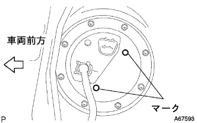

フューエル ポンプ（1NZ-FE(4WD)） 取り付け |
| 1. フューエルサクションチューブASSY W/ポンプ&ゲージ取り付け |
 |
新品のガスケットを介して、フューエルサクションチューブASSY W/ポンプ & ゲージを取り付ける。
図のA部にフューエルホースのペイントマークを合わせるように接続し、クリップのつまみ部が図の範囲内に入るようにセットする。
|  |
フューエルサクションチューブASSY W/ポンプ & ゲージおよびフューエルタンクベントチューブセットプレートのマークを合わせ、ボルト8本で取り付ける。
| 2. フューエルタンク メインチューブ接続 |
 |
メインチューブをサクションプレートのプラグに差し込み、チューブジョイントクリップを取り付ける。
| 3. リヤフロアサービスホール カバー取り付け |
スクリュー４本で、リヤフロアサービスホールカバーを取り付ける。
| 4. リヤシートクッションASSY取り付け |
 |
リヤシートクッションASSY後部のフックをかん合させる。
リヤシートベルトを、リヤシートクッションカバー & パッド後部のゴムバンドに通す。
リヤシートクッションASSY前部のフックをかん合させる。
| 5. リヤシートバックASSY取り付け |
 |
ボルト2本をでリヤシートバックASSYを取り付ける。
クリップ2個を取り付ける。
| 6. バッテリマイナスターミナル取り付け |
| 7. 燃料漏れ点検 |
燃圧のかかった状態で燃料系統に漏れがないことを確認する。
| 8. バッテリターミナル脱着時の初期化 |
参照